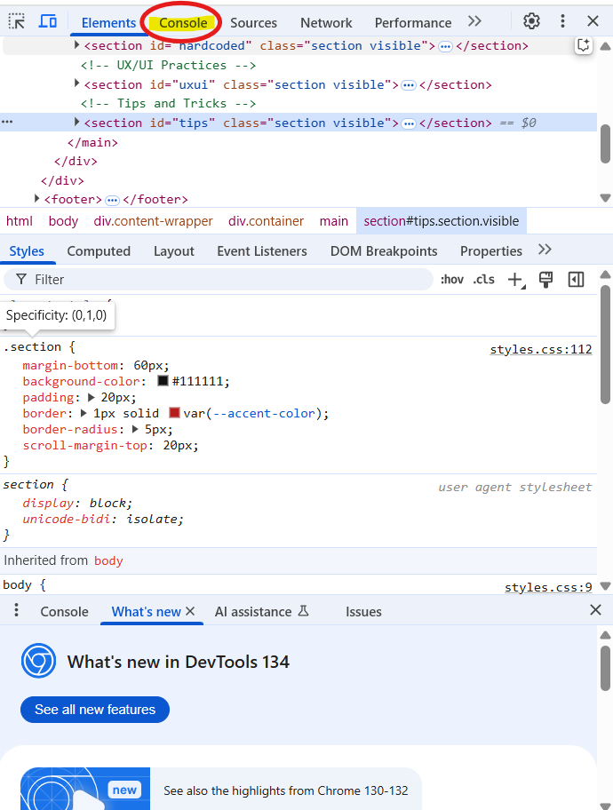

Introduction to Website Development
Hello! I'm Dev, a full-stack engineer, and welcome to Code to Concept!
You might be wondering, "Dev, what's a full-stack engineer?" I'll be explaining this later in the guide, so make sure to stick around.
So... why should you invest in learning how to build a website?
To be honest, I can't give you a why, I can only give you the means, the how.
It is up to you to find out what you want to do with it.
Maybe you're interested in:
- Learning a new skill
- Career opportunities
- The creative freedom it brings
Building a website to teach others about building websites
So, who am I to make a guide on how to build a website?
At the time this project was published, I was in my third year of college, majoring in Software Development.
I've built many projects, one of them being a website for a local church.
I had a passion for what I was doing, and I spent many hours each day at home learning, researching,
and looking for resources to propel me forward. I'd like to take the knowledge I've learned and share it with people that, like me not long ago,
also want to build a website.
Coding vs No-Code Platforms
There are two paths to creating websites. Coding, being a more traditional, manual approach
which is what this guide will be focusing on.
The other is using no-code platforms such as wix or squarespace, which allow you to build websites with minimal or no coding knowledge required.
Let's dive into why you would choose one over the other.
| Factor | Traditional Coding | No-Code Platforms |
|---|---|---|
| Learning Curve | Steep; requires HTML/CSS/JS knowledge | Beginner friendly, drag-and-drop interface |
| Customization | Full control over design and functionality | Limited by platform templates and features |
| Development Speed | Slower at first, faster with experience | Fast; minimal setup required |
| Scalability | High | Limited by the platform's plan and features |
| Cost | Free for small projects | Subscription-based |
Project Context
Almost every business, public figure, and singer you can think of as a website of their own,
why not you? This guide was created for anyone willing to learn how to build a website.
But where do you start? What if It's too confusing?
This guide aims to answer these questions by walking you
through the fundamentals of website building.
The Developer Mindset
Problem Solvers
Learning to code is a lot more than learning to write a program the machine can understand. It's about problem-solving, breaking large tasks into smaller, manageable parts.
All developers face the struggle of a problem that feels larger than they can handle, and many will spend countless time on a problem, looking at it from every angle, examining every possible universe and alternate timeline for the answer (a little exaggerated but you get the point).
The thing is... websites aren't built perfectly in one go. Debugging and testing are part of the process. When you're coding, you'll write something, test it, break it, fix it, tweak it - this is normal. Embracing trial and error is the key to becoming a great developer.
Hard-Coded Website Development
Origins of debugging
Earlier in the guide, we've mentioned debugging and testing, but what exactly do they mean?
The term "debugging" has its origins in early computing and engineering. it was popularized
by a famous incident involving a computer scientist by the name of Grace Hopper in the 1940s. While working
on a Harvard Mark II computer, her team discovered a moth that had gotten trapped in one of the computer's relays, causing it to malfunction.
the engineers removed the moth and Hopper recorded in her notebook:
"First actual case of bug being found."
This event led to the term "debugging", the process of finding and fixing errors in a program.
Testing is the process of finding issues before they become bugs.
Step-by-Step Process
The fundamentals of building a website can be summarized in three parts:
- 🧱 HTML: The content of the page. Think of this as the walls and roof of a house.
- 🎨 CSS: This is the styling of your page. Think of it as painting the walls.
- ⚙️ JavaScript: This is the functionality. Think of it as the doors and windows being able to open and close.
Below you'll find an example of how HTML code is usually set up.
Everything in the head defines the website, while everything in the body is what will be displayed to the user.
<html>
<head>
<title>My Website</title>
</head>
<body>
<h1>Welcome!</h1>
</body>
</html>Fun Fact: A website can be built using just HTML!
To start learning these three, click the button below!
Scroll down to find "The Origins Trilogy" or click "learn" at the top
Start with HTML, then CSS, then JavaScript
Coding Best Practices
-
Write Clear and Readable Code
- Use consistent indentation
- Descriptive names
-
Start with mobile-design first
- Design for smaller screens and progressively enhance the layout for larger screens. This leads to a more performant and accessible design.
-
Don't mix HTML and CSS in one file
- Having a file for each makes it easier to maintain
UX/UI Practices
Effective UX (User Experience) and UI (User Interface) design is important to creating a website that is both visually appealing and highly usable.
- User-Centered Design: Design with the end user in mind.
- Consistency: Be consistent in your design
- Accessibility: Make sure your website is accessible by everyone
- Responsive Design: Have your website be able to adapt to different devices
Tips and Tricks
Something cool that not many know about is you can alter the look of a website by right-clicking it, and
clicking inspect. Feel free to try it now!
Make sure you zoom out all the way for the next step, or else it won't work.
Click on console, located between elements and sources
Type in: document.designMode = 'on';
this will make the website editable like a document, and you are able to click on any text on the page and edit
it directly. To get rid of changes, all you have to do is refresh the page.
Try adding some words here: